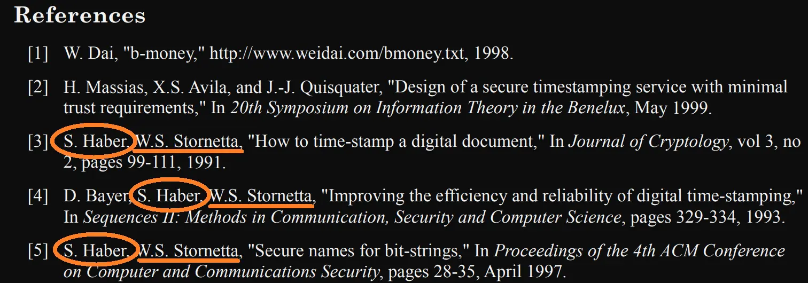
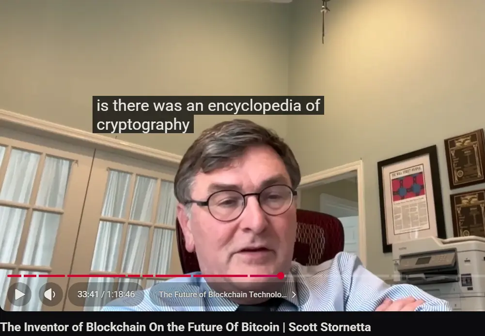
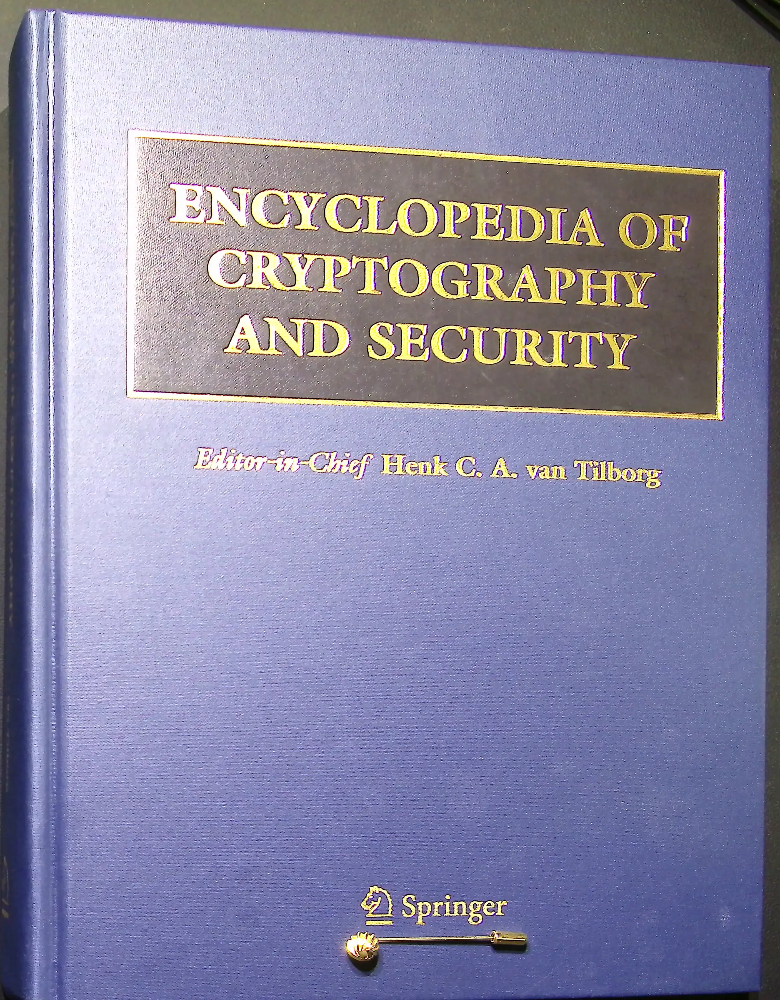
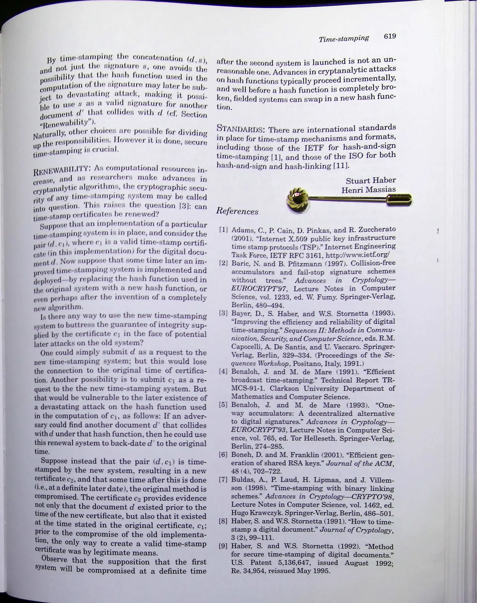
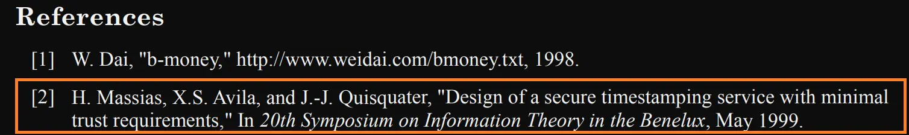
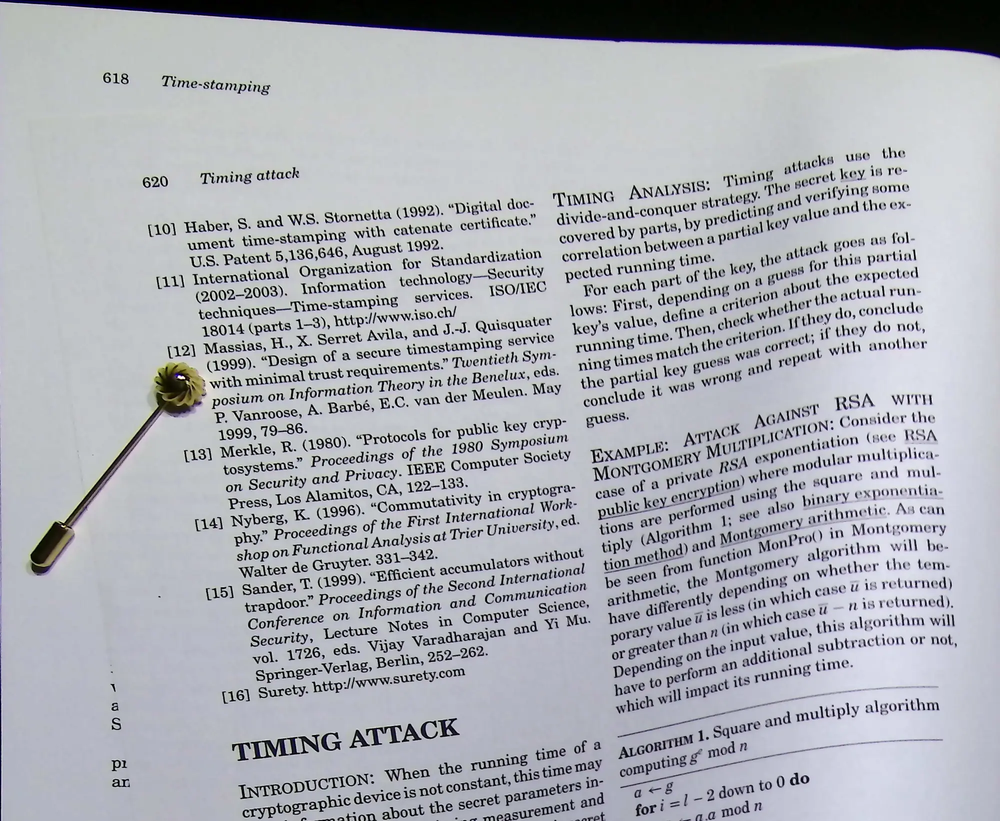
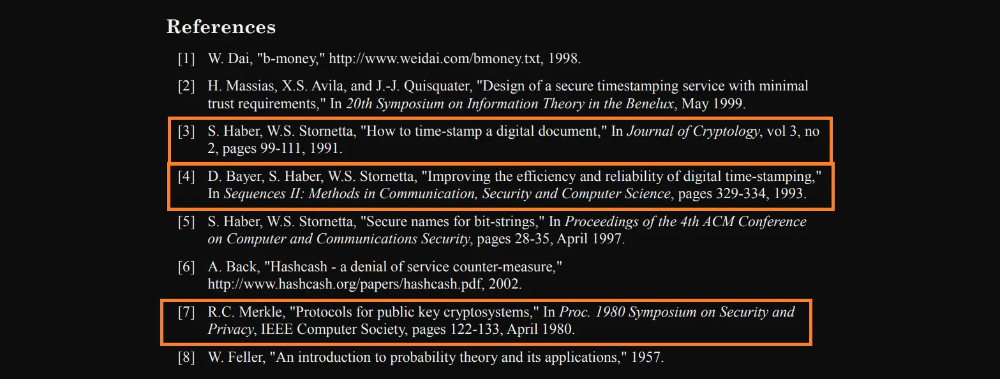
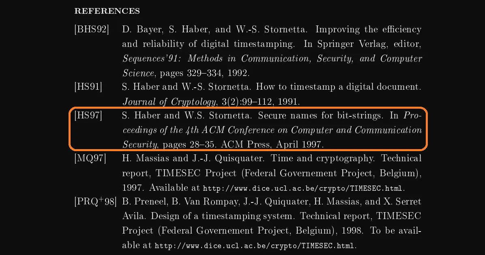
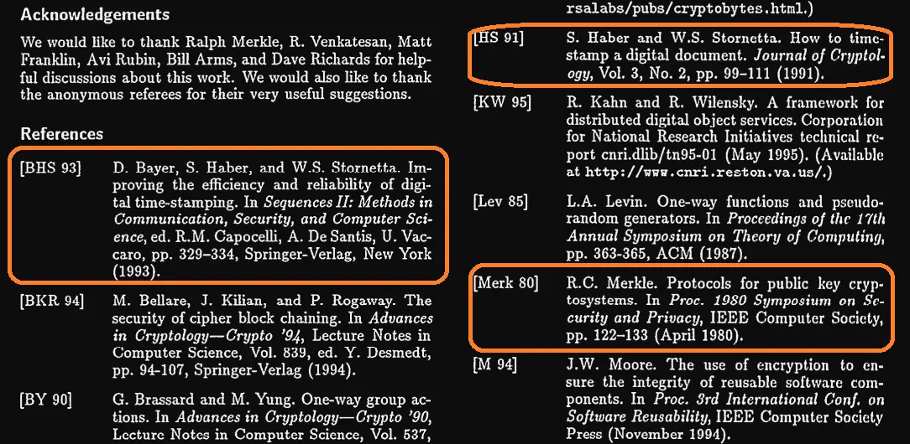

Investigation | Bitcoin History | July 29 2026
Satoshi Nakamoto’s Cryptography Encyclopedia Discovered - Claim Scott Stornetta & Stuart Haber
Stuart Haber and Scott Stornetta are two of the Godfathers behind modern cryptographic timestamping or “Block Chain”. Their contributions to Bitcoin are showcased by three academic works referenced in the Bitcoin Whitepaper References section.

These two legends have laid as much of Bitcoin’s groundwork as giants like Adam Back, Wei Dai and Hal Finney. In a recent interview, Stornetta repeated a theory about Satoshi that originated from his colleague, Stuart Haber.

The Theory: when talking about Satoshi, “...we’re talking about one person, who was professionally a software engineer, and was really dabbling more with the cryptology as well as with the economic incentives...There’s one thing that I haven't seen anyone analyze, and that is the structure of the (Whitepaper) footnotes.” These suggest Satoshi was a “non-professional cryptologist” who “discovered this thing (Block Chain) by reading about it in the Encyclopedia of Cryptology.”
Scott Stornetta
This characterization of Satoshi is not much of a ground breaking take. It is consistent with many others who have suggested that Satoshi was an individual polymath coder, not a group.
But the detail about the Whitepaper footnotes and a mysterious book are interesting.
What are the clues that relate the structure of the Whitepaper footnotes to this mystery encyclopedia? Has no one looked at this angle involving the Whitepaper footnotes before?
The Satoshi Times went down this rabbit hole to see what could be found, and the details are fun.
We found that there is an Encyclopedia of Cryptography and Security that was published in 2005 by Henk C. A. van Tilborg via Springer, that matches the description given by Stornetta. This pre-dates Bitcoin (2007-2008), and thus could have been a primary resource used by Satoshi Nakamoto in his invention of Bitcoin.

In this book, there is a chapter on Time-stamping that is authored by none other than Stuart Haber himself. Oddly, this interesting detail was not mentioned by Scott Stornetta in his interview where he explains this same theory, originating from Haber, and now involving Haber. Meta. There is also a second coauthor of this same Time-stamping chapter, who is also referenced in the Whitepaper, in reference [2]. The mysterious Henri Massias.

In the Stornetta interview, he describes the Massias paper [2] referenced by the Bitcoin Whitepaper, as obscure, hard to find and hardly known at the time. This fact is verifiable, since an academic search for “Design of a secure timestamping service with minimal trust requirements” yields no results on several platforms today. Furthermore, this Massias work is barely cited before 2009 by other academic papers. Thus, how Satoshi stumbled across this unknown paper has been a mystery. At the time, Massias was only a graduate student, with none of his works widely cited at all. It is probable that only the people within his social circle and who attended the 20th Symposium conference, in which this paper was released, would know about the Massias paper [2].

A common theory has been: perhaps Satoshi attended this 20th symposium conference, to explain his knowledge of the Massias paper. Indeed, Satoshi enthusiasts, like Jens Ducrée in his Satoshi Nakamoto book, focus on this theory of Satoshi being a 20th symposium conference attendee, to a near certainty. But this was probably not the case, because of this Cryptography Encyclopedia theory. From this 697 page tome, we see that the Time-stamping chapter cites Miassias’s obscure paper in it’s footnotes [12], as reflected in the Bitcoin Whitepaper [2].

Thus, this encyclopedia is a strong possible angle for how Satoshi first came across the Massias paper. Satoshi did not need to attend an obscure symposium to gain knowledge of the Massias paper. He simply needed to have read a chapter on Time-stamping, in a Cryptography Encyclopedia, from 2005, that also happened to be authored by Massias and Haber.
In addition, two of the three Whitepaper referenced Haber & Stornetta papers [3][4] are also cited in this same Time-stamping chapter [8][3], along with a paper by Merkle titled “Protocols for public key cryptosystems.” [13]. This Merkle paper is also number [7] of the eight Bitcoin Whitepaper references.

However, some fun anomalies begin to surface when we look closer at the details of these citations. For one, the month of publication is missing from this Merkle article, reference [13] in the Encyclopedia. But the month of April is present and accounted for in the Whitepaper footnote for this same reference [7]. Furthermore, the referencing format for the Whitepaper references matches the IEEE standard, while the Encyclopedia uses the APA referencing format. In addition, the third Haber and Stornetta reference in the Whitepaper, “Secure Names for Bit-Strings”, is not mentioned in the Encyclopedia.
Thus, this may suggest that Satoshi didn’t stop at the Encyclopedia for his research, but may have found the “Secure Names for Bit-Strings” paper by following other trails of references in prior papers. Perhaps he also changed the citing format from APA to IEEE to cover his research trail too. IEEE is also used more by engineering students and professionals, which is related to software development.
After consulting the encyclopedia Time-stamping chapter and references, Satoshi could have moved on to Massias’s paper “Design of a secure timestamping service with minimal trust requirements” and consulted it’s work cited list. These references include the first and second already known Haber and Stornetta papers, but also the third unknown 1997 paper “Secure Names for Bit-Strings.”

Thus, Satoshi may have read “Secure Names for Bit-Strings,” after finding it referenced in Massias’s paper, as it is not referenced in the Encyclopedia and because of the following heuristics. The references in “Secure Names for Bit-Strings” are extremely close in formatting to the Whitepaper’s format (IEEE). Furthermore, the missing month of April from the Merkle paper reference of the Encyclopedia is included in the “Secure Names for Bit-Strings” references. In addition, “R.C. Merkle. “ is the format used in the Whitepaper and in the Bit-strings paper, but not in the Encyclopedia which only says “R. Merkle,” missing the “C”.

In conclusion, the possible academic research path Satoshi took started with the 2005 Encyclopedia of Cryptography and Security chapter on Time-stamping. From the references in this chapter, he may have read most of the cited papers, including Massias’ obscure paper on “Design of a secure timestamping service with minimal trust requirements”. From this papers work cited list Satoshi may have found “Secure Names for Bit-Strings.” He then may have transcribed the same referencing format (IEEE) and additional information from this last paper to the Whitepaper.
This narrative assumes a lot, but there is a thread here from the heuristics that is tangible. It appears that Satoshi may have read, digested and grokked all or most of the papers referenced in these works. Though some appear a bit out of place and are not the core academic original of some innovative ideas.
Satoshi may have also felt embarrassed to reference the 2005 Encyclopedia directly in the Bitcoin Whitepaper, as it would imply his novice status. Citing the original academic sources helps obscure this novice heuristic, while also still crediting all the authors involved, such as Haber and Massias. It is also good practise to cite the direct primary sources of a work, which the Encyclopedia is not. Satoshi may have wanted to credit Massias for the Time-stamping chapter without referring to the Encyclopedia at all. Thus citing [2] would be a good way to substitute the credit of the Time-stamping chapter for a related work from the same author. Satoshi may be giving indirect credit where it is due here, without revealing his novice hand. Though it is possible Massias’ work on TIMESEC, related to his [2] paper, may have had some kind of influence on Satoshi’s Bitcoin work that has yet to be discussed in detail.
Ultimately, the Time-stamping chapter by Stuart Haber & Henri Massias in the 2005 first edition of the Encyclopedia of Cryptography and Security is a strong candidate for how Satoshi Nakamoto first discovered “Design of a secure timestamping service with minimal trust requirements” [2]. Stornetta’s theory on this rings more true than others.